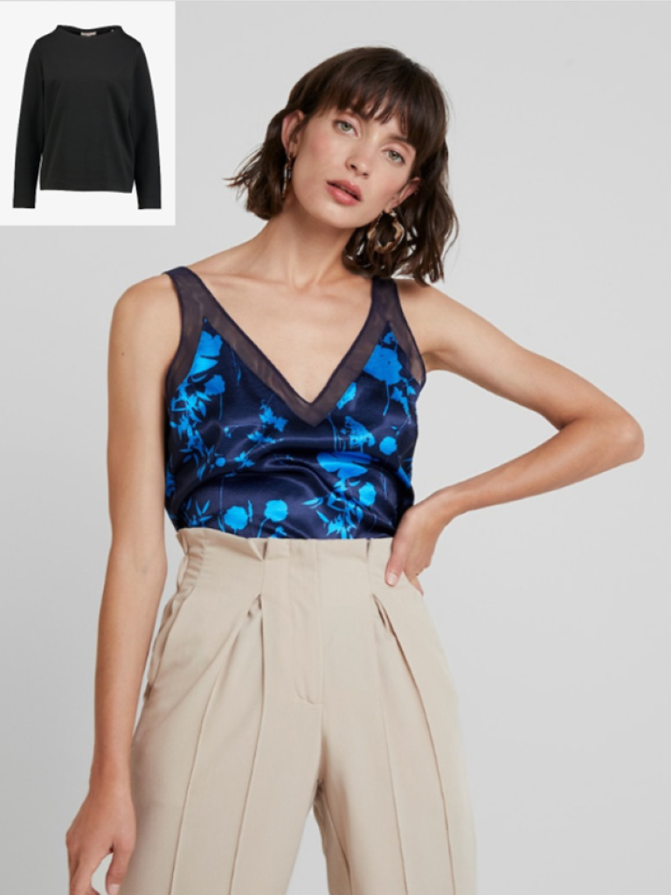
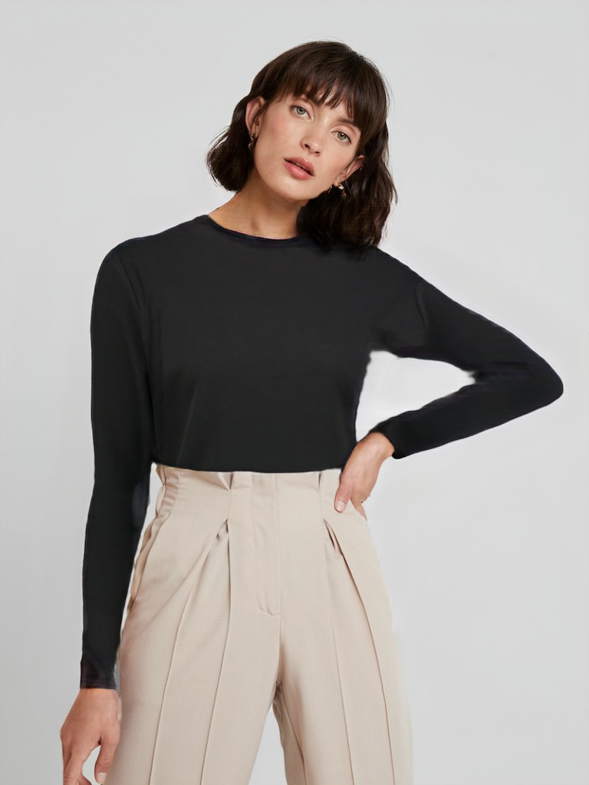

Advanced computer vision system for accurate clothing alignment
Developed a complete preprocessing pipeline that improved clothing alignment accuracy by 25% for virtual try-on systems, enabling more realistic fashion visualization.


Developed as part of graduation research at Cairo University - Code available for preprocessing components only